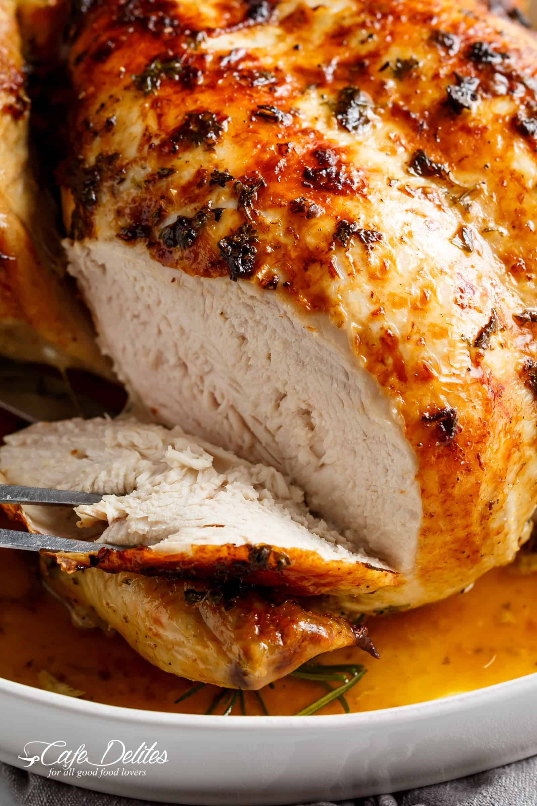

Garlic herb butter roast chicken

Nothing beats an easy to make and even easier to prepare roast chicken! Especially when roasted with garlic butter,
rosemary, parsley, lemon, and a hint of white wine for an unbeatable flavour. This Garlic Herb Butter Roast Chicken
definitely beats the pants off of any rotisserie chicken!
When we roast chicken, we don't do it with just a sprinkling of salt. No no no…we do it FLAVOUR. There is so much of
it in this chicken that beats any restaurant chicken.
Easy to find ingredients you have in your fridge or pantry.
- Garlic + Butter = Garlic Butter
- Olive oil
A touch of lemon
A hint of dry white wine (optional, but adds so much flavour to the meat while keeping it so juicy)
- Rosemary
- Parsley
How to roast whole chicken
Not only does this recipe give you a roast chicken with flavour… it delivers crispy skin, juicy meat and a nice
dinner to go with the ultimate creamy mashed potatoes.
The following steps makes this baked whole chicken stand out from the rest!
- Preheat oven.
- Rinse and pat dry chicken with paper towel.
- Combine olive oil, melted butter, wine (if using) and lemon juice together, rubbing all over the chicken, under
the skin and inside the cavity.
- Season chicken outside and inside with salt, pepper and parsley. Don’t be afraid to use generous amounts!
- Rub the minced garlic over the chicken and under the skin. I do this separately as the last step to maximise the
garlic taste.
- Stuff the garlic head into the chicken cavity along with the rosemary sprigs and the squeezed lemon halve. You
can also use sprigs of Thyme or any other herb.
- Roast chicken, basting half way through cooking time, until cooked through.
- Broil until golden and crispy!
I like to go in the carcass, over the chicken and under the skin with all of my ingredients to ensure maximum taste. You
want every inch covered in flavour.
how long to roast?
Over one hour, depending on the size of your bird. This 4 pound (2kg) bird took one hour and 20 minutes cooking
time, then a resting time of 10 minutes to keep all of those juices in before slicing.
Usually I’ll pass on chicken breasts because juicy crispy chicken legs are my favourite! BUT! In this roast chicken
recipe? I eat it ALL. The breasts come out so moist. NO dry meat happening on this plate!
Do you see that crispy skin happening down there? ↓ That’s the part we fight over at the table. PLEASE tell me we
are normal and your family fights over crispy skin too?
SOOOO soft and juicy inside!
INGREDIENTS
- 4 pound (2kg) whole chicken, at room temperature giblets and neck removed from cavity*
- 1/4 cup unsalted butter, melted
- 3 tablespoons olive oil
- 1/4 cup white wine, (OPTIONAL) -- use a dry wine like a Sauv blanc or Chardonnay
- 1 lemon, halved
- Salt and freshly ground pepper, to taste
- 2 tablespoons fresh chopped parsley
- 4 garlic cloves, minced
- 1 head of garlic roughly peeled and cut in half horizontally through the middle crosswise
- 3 fresh whole rosemary sprigs
INSTRUCTIONS
- Preheat oven to 430°F | 220°C (400°F or 200°C fan forced). Line a baking tray with foil, or lightly grease a roasting pan.
- Discard neck from inside the cavity and remove any excess fat and leftover feathers. Pat dry with paper towels.
- Pour the olive oil, melted butter, wine (if using) and the juice of half a lemon over the chicken, under the skin and inside the cavity. Season chicken liberally on the outside and inside the cavity with salt and pepper. Sprinkle over the parsley.
- Rub the minced garlic over the chicken, mixing all ingredients together over the chicken and under the skin.
- Stuff the garlic head into the chicken cavity along with the rosemary sprigs and the squeezed lemon halve. Tie legs together with kitchen string.
- Place breast-side up into baking tray or roasting pan. Roast for 1 hour and 15-20 minutes, basting half way through cooking time, until juices run clear when chicken thigh is pierced with a skewer.
- Baste again, then broil for a further 2-3 minutes, until golden.
- Remove from the oven, cover with foil and allow to stand for 10 minutes before serving. Serve, drizzled with pan juices and remaining lemon half cut into wedges or slices.